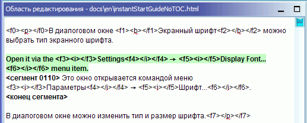
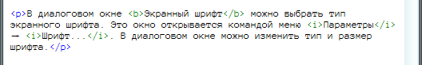

В этом документе представлены лишь основные приёмы работы с программой. В идеале всем пользователям нужно прочитать полное руководство, чтобы ознакомиться со всеми возможностями программы OmegaT. В описанных здесь сочетаниях клавиш используется последовательность «CTRL+КЛАВИША», но пользователи Mac-систем должны вместо этого использовать «CMD+КЛАВИША». Клавиша CMD на клавиатурах фирмы Apple помечена либо как COMMAND, либо значком яблока.
Окно OmegaT разбито на три части. Размер каждой из них можно изменить с помощью мыши. Слева находится редактор, где вводится переведённый текст. Справа вверху расположено окно просмотра совпадений, в котором отображаются совпадения из памяти переводов. Внизу находится окно глоссария, где отображаются совпадения слов из глоссария.
В окне редактора OmegaT отображается оригинальный текст, разбитый на сегменты — предложения или абзацы, — которые также называются единицами перевода. Задача переводчика заключается в переводе этих сегментов на свой язык. При переходе от сегмента к сегменту переведённый текст сохраняется в памяти переводов. По окончании перевода всех сегментов (или по запросу пользователя) полученная память переводов будет использована для создания переведённых документов в каталоге «Target».
В OmegaT рабочие материалы организованы в так называемые проекты переводов. Для каждого проекта OmegaT создаётся набор каталогов. В этих каталогах хранятся исходные документы, которые нужно перевести, и дополнительные глоссари и файлы памяти переводов, которые могут помочь в работе. Помимо этого программой создаётся каталог «Target», в котором будут создаваться переведённые документы.
Выберите команду меню Проект → Создать....
Перейдите к каталог, который будет использоваться для хранения файлов проекта, и введите название проекта. Это название будет использовано для создания главного каталога проекта, в котором будут храниться все файлы и подкаталоги проекта.
В следующем диалоговом окне будет предложено подтвердить или изменить каталоги создаваемого проекта.
Расположение подкаталогов можно оставить без изменений, однако стоит проверить правильность кодов языков для оригинала и перевода. Выберите в раскрывающемся меню код языка (2 буквы) или код языка и региона (2 + 2 буквы) или введите его вручную (двух- или трёхбуквенный). Запомните расположение подкаталога «Target» (для переведённых документов). Чтобы текст разбивался на сегменты по предложениям, а не по абзацам, желательно проверить правила сегментирования.
После нажатия кнопки «ОК» для подтвердждения параметров проекта будет предложено выбрать исходные документы для импорта. Импортировать можно как отдельные файлы, так и целые деревья каталогов (со всеми файлами изо всех подкаталогов). Если были случайно импортированы не те документы, или их число слишком велико, документы можно просто удалить из каталога «Source» проекта (в любом файловом менеджере).
Список переводимых файлов доступен окне Файлы проекта (вызывается командой меню Проект → Файлы проекта... , если это окно не было открыто автоматически). После изменения содержимого каталога «Source» не забудьте перезагрузить проект (командой меню Проект → Перезагрузить). По умолчанию сразу открывается первый файл проекта. Помните, что в OmegaT можно переводить только файлы перечисленных ниже форматов, если они соответствуют шаблонам, указанным в файловых фильтрах. Все остальные файлы будут проигнорированы.
После настройки проекта и импорта файлов для перевода в окне редактора откроется первый исходный файл. Первый сегмент выделяется зелёным цветом. Ниже, в «поле перевода», отображается исходный текст. (На данном этапе весь текст вне поля перевода защищён и его нельзя изменить.) Перевод нужно вводить между тегами <сегмент 0001> и <конец сегмента>, перезаписывая при этом текст оригинала. Для перехода к следующему сегменту нажмите клавишу ВВОД. Примечание.
В подменю Вид главного меню можно настроить область редактирования, например включить или отключить отображение текста оригинала, подсветку переведённого текста и др.
После нажатия клавиши ВВОД выполняется несколько операций: в память переводов добавляется пара сегментов (оригинал и его перевод) и автоматически переводятся все идентичные сегменты, которые есть в других файлах проекта. Кроме того, в памяти переводов и в глоссарии ищутся совпадения для следующего непереведённого сегмента.
Если в памяти переводов для следующего сегмента были найдены нечёткие совпадения (от 30% и выше), они отображаются в области просмотра совпадений. По умолчанию сразу выбирается первое совпадение.

Совпадение из области просмотра можно вставить в поле перевода с помощью указанных ниже сочетаний клавиш.
CTRL+I.CTRL+R.Если было найдено несколько совпадений, можно выбрать не первое из них.
CTRL+2 для второго совпадения, CTRL+3 для третьего и т. д.CTRL+I или CTRL+R.Примечание: можно настроить автоматическую вставку в поле перевода первого совпадения, процент подобия которого выше определённого значения, при открытии сегмента. Этот параметр настраивается в меню Параметры → Параметры редактирования...)
Если в глоссарии были найдены термины, совпадающие на 100%, они отображаются в области просмотра глоссариев.
В OmegaT доступно многофункциональное средство поиска. Откройте окно поиска, нажав клавиши CTRL+F, и введите в поле «Что искать» искомое слово или фразу. Кроме того, в области редактирования можно выделить искомое слово или фразу и нажать клавиши CTRL+F. Это слово или фраза будет автоматически вставлено в поле «Что искать».
В области переводчика Google автоматически отображается машинный перевод текущего сегмента. Нажмите сочетание клавиш CTRL+M, чтобы заменить содержимое текущего сегмента на машинный перевод.
После перевода всех сегментов (или в любой момент по желанию пользователя) необходимо обновить конечные документы с использованием переводов, сохранённых в памяти переводов. Для этого выберите команду меню Проект → Создать переведённые документы. На основе документов из каталога Source проекта будут созданы переведённые версии, независимо от завершённости их перевода. Полностью или частично переведённые документы будут сохранены в каталоге Target проекта. Чтобы завершить перевод, откройте эти документы в соответствующих приложениях (в браузере, текстовом процессоре и т. п.), чтобы проверить содержимое и форматирование перевода. Затем можно переключиться обратно в приложение OmegaT, чтобы внести необходимые исправления. По окончании не забудьте заново создать переведённые документы.
В OmegaT обеспечивается сохранение форматирования исходных документов (толщина шрифта, его наклон и т. п.) путём окружения такого текста специальными тегами. Теги OmegaT состоят из одной или нескольких букв, после которых следуют цифры. Закрывающий тег содержит символ наклонной черты («/») (пример: <f0>, </f0> <br>, </s2> и т. п.). Работать с этими тегами нужно осторожно и проверять, чтобы они были правильно перенесены в сегменты перевода (см. раздел «Работа с тегами»).
В этих примерах теги были специально выделены, чтобы их лучше было видно. В OmegaT теги так не выделяются. HTML-теги, выделенные голубым цветом, будут пропущены программой OmegaT, поскольку они полностью охватывают сегмент. HTML-теги, выделенные зелёным цветом обрабатываются программой OmegaT, поскольку они находятся внутри сегмента. Ниже представлен пример сегмента с HTML-кодом.
<p>В диалоговом окне <b>Экранный шрифт</b> можно выбрать тип экранного шрифта. Это окно открывается командой меню <i>Параметры</i> → <i>Шрифт...</i>. В диалоговом окне можно изменить тип и размер шрифта.</p>
Вот как этот текст с переводом на русский язык выглядит в окне OmegaT:

Вот как этот HTML-текст выглядит после создания переведённого документа:

Ошибки тегов в переведённом документе не выявляются автоматически. Поэтому перед передачей документа заказчику необходимо проверить текст на наличие таких ошибок.
Выберите команду меню Сервис → Проверить теги. Будет показана таблица с сегментами, в которых теги оригинала и перевода не соответствуют друг другу. Щёлкните номер сегмента. Ошибочный сегмент будет открыт в редакторе, где можно будет исправить неправильную расстановку тегов. Нажмите сочетание клавиш ВВОД, чтобы проверить исправленный сегмент, и повторите проверку документа, повторно нажав сочетание клавиш CTRL-T.
Иногда ошибки тегов могут привести к тому, что документ даже нельзя будет открыть. Поэтому перед созданием переведённых файлов нужно всегда проверять документы на наличие ошибок тегов. Кроме того, следует дважды проверить окончательное форматирование, открыв переведённый документ в соответствующем приложении.
В некоторых языках программирования (например, в PHP, C) в строках в качестве заполнителей используются специальные теги в сочетании с функцией printf. Программа OmegaT может выявлять и проверять эти теги, если включить соответствующую функцию. Выберите команду меню Параметры → Проверка тегов.... Можно выбрать простую или полную проверку. В простой проверке участвуют только простые варианты возможных значений заполнителей. Это полезно, когда в исходном коде отсутствуют слишком сложные заполнители, и если возникает слишком много ложно-положительных срабатываний.